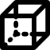

Mesh tab of the dock
Meshes are displayed only in orthogonal view widget.
Mesh list
Mesh list frame at the top. Left-click to select a mesh element in the list (blue outline in Windows platform, blue background in MasOS platform).
Mesh item
Mesh item widgets:
- Check box
Some processes are performed on checked mesh(es) such as removing, export, duplicate, overlay, filtering, isotropic dilatation, isotropic shrinking, set operators, and features.
- Edit box
To display and edit mesh name.

Left-click to toogle mesh visibility in the orthogonal view widget

Left-click to select mesh opacity in the orthogonal view widget (0.0 transparent, 1.0 opaque).

Left-click to display a mesh color dialog and change the mesh color.
Left-click to display a mesh dialog to edit mesh properties (ambient factor, diffuse factor, specular factor, specular power, metallic factor, roughness factor, algorithm of rendering i.e. Flat/Gouraud/Phong/PBR, vertex visibility, edge visibility, point size, line width, vertex color, edge color, render point as sphere, render line as tube).
Left-click to display a menu for applying rigid geometric transformation to the mesh:
edit box Tx: apply an x-axis translation in mm to the mesh, its position is updated in the orthogonal view widget.
edit box Ty: apply an y-axis translation in mm to the mesh, its position is updated in the orthogonal view widget.
edit box Tz: apply an z-axis translation in mm to the mesh, its position is updated in the orthogonal view widget.
edit box Rx: apply a rotation in degrees around the x-axis to the mesh, its position is updated in the orthogonal view widget.
edit box Ry: apply a rotation in degrees around the y-axis to the mesh, its position is updated in the orthogonal view widget.
edit box Rz: apply a rotation in degrees around the z-axis to the mesh, its position is updated in the orthogonal view widget.
Clear button, clear translations and rotations (set to 0.0), mesh position is updated in the orthogonal view widget.
Align mesh center to cursor, move the mesh barycenter to the current cursor position in the orthogonal view widget.
Resample mesh, resample mesh vertices with current geometric transformation (edit boxes). Resampling is no longer reversible, it is therefore advisable to apply it to a copy of the original mesh.

Left-click to save mesh (PySisyphe XMESH file, xml format), mesh name is used as file name.

Left-click to remove mesh from list and from orthogonal view widget.
{kind=link}
{kind=link}
Icon bar
Icon bar below mesh list:

Left-click to show mesh selection dialog (PySisyphe XMESH file, xml format), adds selected mesh(es) to the mesh list and displays them in the orthogonal view widget. This mesh must be in the same space as the reference volume displayed in the view widget i.e. same space ID.
Left-click to add outer surface mesh to the list and displays it in the orthogonal view widget. The isosurface algorithm used to generate mesh is specified in Mesh settings (Contour, Marching Cube or Flying Edge).
Left-click to show a menu to add a sphere mesh to the list. Edit the sphere radius in mm (default 10 mm). Select menu Add sphere mesh to display it at the cursor position in the orthogonal view widget.
- 
Left-click to show a menu to add a cube mesh to the list. Edit sizes in each axis in mm (default 10 mm). Select menu Add parallelepiped mesh to display it at the cursor position in the orthogonal view widget.
Left-click to save all mesh(es) of the list.

Left-click to remove all mesh(es) from the list and from the orthogonal view widget.
Left-click to remove checked mesh(es) from the list and from the orthogonal view widget.

Left-click to export checked mesh(es) (supported formats OBJ, STL, VTK, XMLVTK).

Left-click to check all mesh(es) of the list.

Left-click to uncheck all mesh(es) of the list.

Left-click to add a copy of the selected mesh in the list.
Left-click to display a menu of available volume(s) in the Thumbnail bar (reference and overlays) to paint mesh surface with scalars and LUT of this volume.
Left-click to display a thresholding dialog box for selecting upper and lower thresholds used to generate an isosurface mesh (see widgets). The isosurface calculation algorithm can be selected from Mesh tools.

Left-click to show a menu for selecting the ROI(s) to be converted to mesh(es). This menu displays available ROI(s) previously loaded in the ROI list dock, and “ROI from disk” to load ROI(s) from disk. New meshes are added to the mesh list dock.
Left-click for ROI conversion of the checked mesh(es).
{kind=link}
{kind=link}
{kind=link}
{kind=link}
{kind=link}
{kind=link}
Mesh tools
Mesh tools below icon bar:

Left-click to filter the checked mesh(es) of the list. New mesh(es) are added to the list and displayed in the orthogonal view widget. The filtering options are in Mesh settings (decimate, fill holes, clean, smooth, smooth algorithm, smooth iterations, smooth relaxation factor and smooth pass band).
Left-click to show a menu to expand the checked mesh(es) of the list. Edit the isotropic margin expansion in mm (default 1.0 mm). Left-click Dilate mesh menu to add new mesh(es) to the list and display them in the orthogonal view widget.
Left-click to show a menu to shrink the checked mesh(es) of the list. Edit the isotropic margin shrinking in mm (default 1.0 mm). Left-click Erode mesh menu to add new mesh(es) to the list and display them in the orthogonal view widget.

Left-click to process union of the checked ROI(s), adds result to the ROI list and displays it in the view widget(s).

Left-click to process intersection of the checked ROI(s), adds result to the ROI list and displays it in the view widget(s).

Left-click to process difference betwenn selected ROI and checked ROI(s), adds result to the ROI list and displays it in the view widget(s).

Left-click to process symmetric difference betwenn selected ROI and checked ROI(s), adds result to the ROI list and displays it in the view widget(s).
Left-click to calculate checked mesh(es) geometric features (volume, surface, bounds, center of mass coordinates, major axis vector, mid-axis vector, minor axis vector, sizes in each vector directions) and displays them in a dialog box. Features can be stored in various formats (CSV, JSON, latex TEX, TEXT, Word XLSX, PySisyphe XSHEET).
{kind=link}
{kind=link}
{kind=link}
Mesh settings
Settings used by mesh tools.
- Segmentation algorithm combobox
Algorithm used for automatic object/background segmentation:
mean, threshold is the mean value of the volume.
otsu, see SimpleITK OtsuThresholdImageFilter class.
huang, see SimpleITK HuangThresholdImageFilter class.
renyi, see SimpleITK RenyiEntropyThresholdImageFilter class.
yen, see SimpleITK YenThresholdImageFilter class.
shanbhag, see SimpleITK ShanbhagThresholdImageFilter class.
triangle, see SimpleITK TriangleThresholdImageFilter class.
intermodes, see SimpleITK IntermodesThresholdImageFilter class.
maximumentropy, see SimpleITK MaximumEntropyThresholdImageFilter class.
kittler, see SimpleITK KittlerIllingworthThresholdImageFilter class.
isodata, see SimpleITK IsoDataThresholdImageFilter class.
moments, see SimpleITK MomentsThresholdImageFilter class.
- Isosurface algorithm combobox
Algorithm used to generate isosurface:
contour, see vtkContourFilter class.
marching, see vtkMarchingCubes class.
flying, see vtkFlyingEdges3D class.
- Decimate checkbox
Reduce the number of triangles in the mesh. See vtkDecimatePro class.
- Fill holes checkbox
Identify and fill mesh holes of the mesh. See vtkFillHolesFilter class.
- Clean checkbox
Merge duplicate points, remove unused points and remove degenerate cells in the mesh. See vtkCleanPolyData class.
- Smooth checkbox
Adjust mesh point positions to “smooth” the mesh, making the cells better shaped and the vertices more evenly distributed.
- Decimate percent slidebar
Reduction ratio (between 0.0 and 1.0), ex. 0.2, -20% of triangles.
- Fill holes size editbox
Size threshold of the hole that can be filled, radius to the bounding circumsphere containing the hole (default 1000.0).
- Smooth algorithm combobox
Choose mesh smoothing algorithm:
Sinc windowed sinc, see vtkWindowedSincPolyDataFilter class.
Laplacian, see vtkSmoothPolyDataFilter class.
- Smooth iterations editbox
Determines the maximum number of smoothing iterations (between 10 and 20, default 10).
- Smooth relaxation factor editbox
Relaxation factor of the laplacian smoothing, lower values produce more smoothing. Small relaxation factors and large numbers of iterations are more stable than larger relaxation factors and smaller numbers of iterations (between 0.0 and 1.0, default 0.1).
- Smooth pass band editbox
Pass band factor of the Sinc smoothing, lower values produce more smoothing (between 0.0 and 2.0, default 0.1).